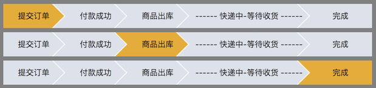

如下图使用多个 步骤 表示一个过程：

这样的组件 Qt 没有提供，需要我们自己实现，可以用下面几种方式实现:
使用 QPainter 绘图：计算每一个步骤的图形(可以使用 QPainterPath)和位置，然后在 QPainterPath 上填充背景和文字
QPushButton + QSS Border-Image + 绝对坐标定位：因为 QPushButton 之间有重叠，而不是一个紧挨着一个的排列，所以需要计算每个步骤的坐标进行定位，使用 PS 设计步骤在不同状态时的背景图，需要 6 张图片：
QPushButton + QSS Border-Image + QHBoxLayout：使用 Layout 把 QPushButton 一个紧挨着一个的排列，使用 PS 设计步骤在不同状态时的背景图，需要 5 张图片：
下面介绍 QPushButton + QSS Border-Image + QHBoxLayout 的实现，其他两种方式感兴趣的话就自己思考一下怎么实现:
- 关键是类 StepWidget、style.qss 以及背景图
- 类 UiUtil 用于加载 style.qss，下载最后的工程文件进行查看
- main.cpp 用于启动程序
1
2
3
4
5
6
7
8
9
10
11
12
13
14
15
16
17
18
19
20
21
22
23
24
25
26
|
#ifndef STEPWIDGET_H
#define STEPWIDGET_H
#include <QWidget>
#include <QPushButton>
#include <QList>
class StepWidget : public QWidget {
Q_OBJECT
public:
StepWidget(QWidget *parent = 0);
~StepWidget();
protected slots:
void updateStepButtonsStyle();
private:
QList<QPushButton*> stepButtons;
};
#endif
|
1
2
3
4
5
6
7
8
9
10
11
12
13
14
15
16
17
18
19
20
21
22
23
24
25
26
27
28
29
30
31
32
33
34
35
36
37
38
39
40
41
42
43
44
45
46
47
48
49
50
51
52
53
54
55
56
57
58
59
60
61
|
#include "StepWidget.h"
#include "UiUtil.h"
#include <QPushButton>
#include <QHBoxLayout>
#include <QShortcut>
#include <QKeySequence>
#include <QDebug>
StepWidget::StepWidget(QWidget *parent) : QWidget(parent) {
QHBoxLayout *layout = new QHBoxLayout();
QStringList steps = QStringList() << "提交订单" << "付款成功" << "商品出库" << "------ 快递中-等待收货 ------" << "完成";
foreach (const QString &step, steps) {
QPushButton *button = new QPushButton(step);
button->setFlat(true);
stepButtons.append(button);
layout->addWidget(button);
connect(button, SIGNAL(clicked()), this, SLOT(updateStepButtonsStyle()));
}
layout->addStretch();
layout->setSpacing(0);
setLayout(layout);
foreach (QPushButton *b, stepButtons) {
b->setProperty("class", "StepButton");
b->setProperty("status", "middle");
}
stepButtons.last()->setProperty("status", "last");
stepButtons.at(2)->click();
}
StepWidget::~StepWidget() {
}
void StepWidget::updateStepButtonsStyle() {
QPushButton *clickedButton = qobject_cast<QPushButton*>(sender());
int clickedIndex = stepButtons.indexOf(clickedButton);
QPushButton *prevButton = stepButtons.value(clickedIndex - 1);
bool isLast = (clickedIndex == stepButtons.size() - 1);
foreach (QPushButton *b, stepButtons) {
b->setProperty("status", "middle");
}
stepButtons.last()->setProperty("status", "last");
clickedButton->setProperty("status", isLast ? "active-last" : "active-middle");
prevButton && prevButton->setProperty("status", "active-prev");
this->setStyleSheet("/**/");
}
|
StepButton 要设置 flat 为 true，清除默认的 border、margin 等，添加的 QSS 的效果才更理想。
给按钮设置 class 属性为 StepButton，是为了避免它们的 QSS 影响其他 QPushButton 的样式。
按钮有 5 个状态: middle, last, active-middle, active-last, active-prev
- 初始时第一个到倒数第二个的状态是 middle，最后一个的状态是 last
- 当点击一个按钮后，它变为当前按钮，状态变为 active-middle，如果它是最后一个按钮，则为 active-last
- 当前按钮的前一个按钮的状态是 active-prev
- 按钮的属性变化后对应的 QSS 不会自动生效，需要调用
setStyleSheet("/**/") 才行
style.qss
1
2
3
4
5
6
7
8
9
10
11
12
13
14
15
16
17
18
19
20
21
22
23
24
25
26
27
28
29
| .StepButton {
min-width: 80px;
min-height: 40px;
max-height: 40px;
padding-left: 10px;
padding-right: -10px;
border-width: 0px 22px 0px 0px;
}
.StepButton[status="middle"] {
border-image: url(:/img/normal.png) 0 22 0 0 repeat stretch;
}
.StepButton[status="last"] {
border-image: url(:/img/last.png) 0 22 0 0 repeat stretch;
}
.StepButton[status="active-middle"] {
border-image: url(:/img/active.png) 0 22 0 0 repeat stretch;
}
.StepButton[status="active-last"] {
border-image: url(:/img/last-active.png) 0 22 0 0 repeat stretch;
}
.StepButton[status="active-prev"] {
border-image: url(:/img/active-pre.png) 0 22 0 0 repeat stretch;
}
|
.StepButton 中定义共有的 QSS，限定了最小宽度和高度等是为了看上去效果更好，并不是必须是上面给定的数值。不同状态下定义对应次状态的 border-image，它会覆盖 .StepButton 中相同的 QSS。
上面 QSS 的关键是 Border-Image 的应用，相关教程请参考 Border Image
工程源码
Qt-Steps.7z
运行时把 bin 目录下的 style.qss 复制到编译出来的可执行文件所在目录：Windows 为 Steps.exe，Linux、Mac 为 Steps。